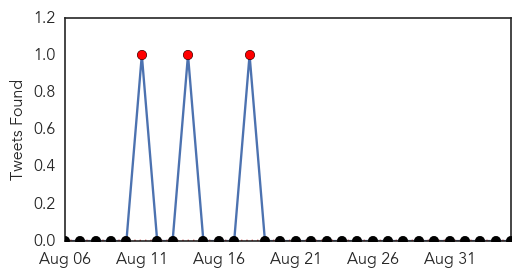
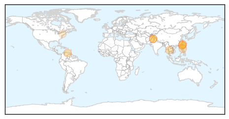
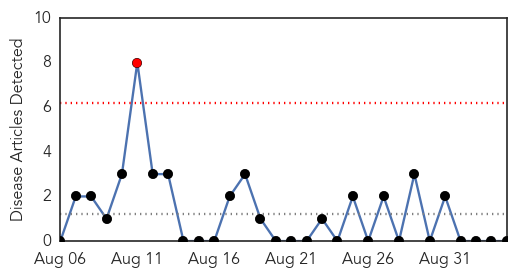

Dengue Fever
30-Day Web Trend
0 alerts, 0 warnings
30-Day Twitter Trend
3 alerts, 0 warnings

Article Locations
Article Confidences

Top Articles:
- 0.985
- Dengue resurgence: New cases alarm Punjab govt
- 0.983
- Taiwan deals with worst summer outbreak of dengue fever - Xinhua
- 0.940
- Taiwan battle worst dengue fever outbreak
- 0.925
- Venezuelans at Risk as Country's Ailing Healthcare System Deteriorates
- 0.896
- Pakistan: Punjab CM displeased with rise in dengue cases in Pindi
- 0.879
- Punjab CM displeased with rise in dengue cases in Pindi - Pakistan
- 0.850
- 55,000 reported cases so far in 2015
- 0.639
- Taiwan cabinet to use reserve fund to aid Tainan’s dengue fever battle
- 0.547
- Feed Your Inner Hypochondriac With Updated Google Health Info
Top Tweets:
-
No tweets found for Sep 04, 2015
Chikungunya
30-Day Web Trend
1 alerts, 0 warnings

30-Day Twitter Trend
1 alerts, 0 warnings

Article Locations

Article Confidences

Top Articles:
-
No articles found for Sep 04, 2015
Top Tweets:
-
No tweets found for Sep 04, 2015